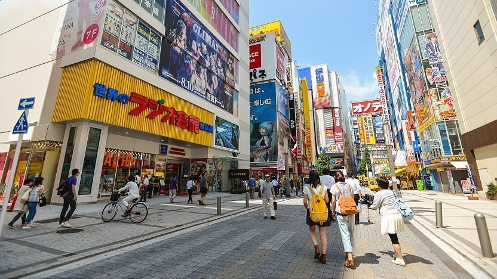
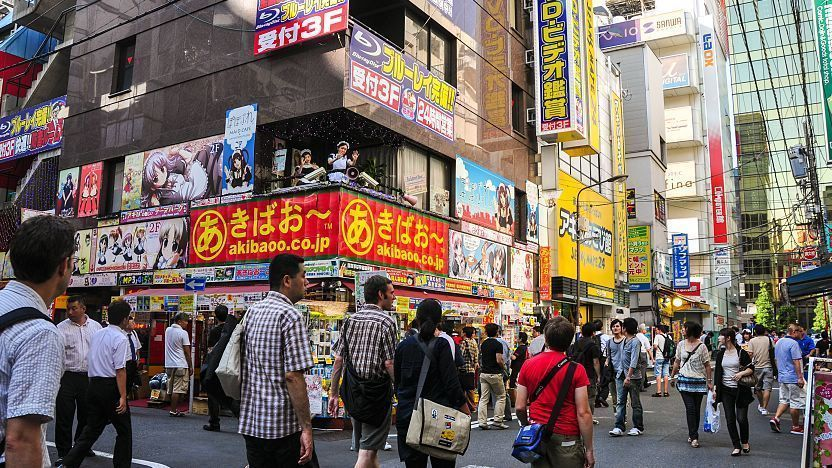

|
͏ ͏ ͏ ͏ ͏ ͏ ͏ ͏ ͏Grande Incêncdio de Meireki͏ ͏ ͏ ͏ ͏ ͏ ͏ ͏ ͏O incêndio começou no décimo oitavo dia do ano, no distrito de Hongō, em Edo, e se espalhou rapidamente pela cidade, devido aos ventos com força de furacão que sopravam de noroeste. Edo, como a maioria das cidades e vilas japonesas da época, e como a maioria das cidades do Leste Asiático, foi construída principalmente de madeira e papel. Os edifícios estavam especialmente secos devido à seca do ano anterior, e as estradas e outros espaços abertos entre os edifícios eram pequenas e estreitas, permitindo que o fogo se alastrasse e aumentasse de forma particularmente rápida. (Muitas cidades na Europa tiveram problemas semelhantes, sendo construídas com material inflamável; Londres iria queimar apenas nove anos depois.) Embora Edo tivesse uma brigada de incêndio designada, o Hikeshi (火 消 し, "extintor de incêndio"), tinha sido estabelecido apenas 21 anos antes e simplesmente não era grande o suficiente, experiente o suficiente ou bem equipado o suficiente para enfrentar tal incêndio. Na segunda noite, os ventos mudaram e o fogo foi empurrado da extremidade sul da cidade de volta ao centro. As casas dos lacaios mais próximos do shōgun, em Kōjimachi, foram destruídas quando o fogo atingiu o castelo Edo, bem no centro da cidade. Por fim, a fortaleza principal foi salva, mas a maioria dos edifícios externos e todas as casas dos lacaios e servos foram destruídos. Finalmente, no terceiro dia, os ventos cessaram, assim como as chamas, mas a fumaça densa impediu o movimento pela cidade, a remoção dos corpos e a reconstrução por vários dias. |
͏ ͏ ͏ ͏ ͏ ͏ ͏ ͏ ͏ O primeiro Maid Café
͏ ͏ ͏ ͏ ͏ ͏ ͏ ͏ ͏Maid Café (メイド喫茶 / メイドカフェ, Meido kissa / Meido kafe) é uma subcategoria dos cafés cosplay, e surgiu no Japão em 2001, quando estavam em alta os animes/mangás de famílias milionárias com vários empregados vestidos com roupas vitorianas. Nestes estabelecimentos, as funcionárias vestem-se com uniformes de empregada e tratam seus clientes como "mestres" de uma mansão.
|
͏ ͏ ͏ ͏ ͏ ͏ ͏ ͏ ͏ O incidente de Aum Shinrikyo͏ ͏ ͏ ͏ ͏ ͏ ͏ ͏ ͏O Ataque do gás sarin no Metrô de Tóquio é o nome dado pela imprensa japonesa e internacional ao ataque ao Metrô de Tóquio (地下鉄サリン事件 Chikatetsu Sarin Jiken?), foi um ato de terrorismo perpetrado por membros do culto apocalíptico chamado Aum Shinrikyo em 20 de março de 1995. Em cinco atentados coordenados, os autores liberaram o gás sarin em várias linhas de metrô de Tóquio, matando 13 pessoas, ferindo 5 500 pessoas em vários graus e causando problemas temporários de visão para quase 1 000 outros. O ataque era direcionado contra comboios/trens passando por Kasumigaseki e Nagatachō, o edifício onde se situa o Governo Japonês. O grupo, liderado por Shoko Asahara, já havia cometido vários assassinatos e ataques terroristas usando sarin, incluindo o ataque Sarin a Matsumoto, nove meses antes. Eles também produziram vários outros agentes nervosos, incluindo VX, e tentaram produzir toxina botulínica e perpetraram vários atos fracassados de bioterrorismo. Asahara foi informado de uma operação policial marcada para 22 de março e planejou o ataque ao metrô de Tóquio para impedir as investigações policiais sobre o culto e talvez desencadear o apocalipse em que acreditavam. O líder também queria iniciar uma Terceira Guerra Mundial. Na operação após o ataque, a polícia prendeu muitos membros importantes da seita. A atividade policial continuou durante todo o verão e mais de 200 membros foram presos, incluindo Asahara. Treze membros da alta gerência da Aum, incluindo o próprio Asahara, foram condenados à morte e mais tarde executados; muitos outros foram condenados à prisão perpétua. O ataque continua sendo o incidente terrorista mais mortal no Japão, conforme definido pelos padrões modernos. |
|   |